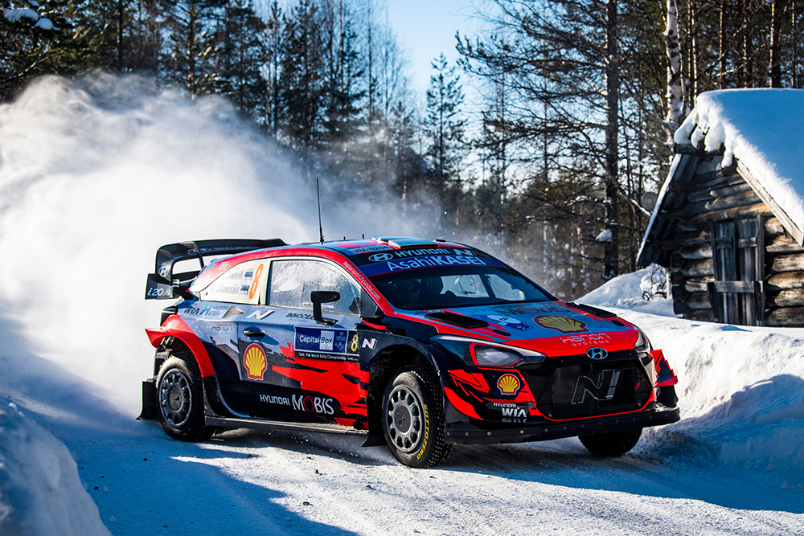

Hyundai i20 N Rally1
Praegune meeskond, millega jätkab võitlust WRC maailmameistrivõistlustel.
2019 WRC Maailmameister
Eesti rallisõitja, kes on vallutanud maailma tipp taseme oma kiiruse, täpsuse ja vastupidava pühendumusega motospordile.
Vaata SaavutusiOtt Tänaku karjäär on täis silmapaistvaid võite ja saavutusi maailma rallimaailmas.
Saavutas mitmeid poodiumikohti ja jätkas võitlust tipp tasemel.
Jätkas tugevaid esitusi WRC etappidel koos Hyundaiga.
Liitus Hyundai Motorsportiga, jätkates võitlust MM-tiitli nimel.
Esimene eestlane, kes võitis WRC maailmameistri tiitli, saavutades 6 etapivõitu.
Tugev hooaeg 5 etapivõiduga, lõpetades teise kohaga üldkokkuvõttes.
Esimene täishooaeg M-Sport Fordis, millega võitis 4 rallit.
Pilte Ott Tänaku põnevate hetkede stseenidest ralliradadel üle kogu maailma.
Koostöö maailma tipptaseme rallitiimidega läbi aastate.
Hyundai i20 N Rally1
Praegune meeskond, millega jätkab võitlust WRC maailmameistrivõistlustel.

Toyota Yaris WRC
Meeskond, millega võitis 2019. aastal WRC maailmameistri tiitli.

Ford Fiesta WRC
Esimene täishooaeg WRC-s, millega saavutas kohe tugevaid tulemusi.